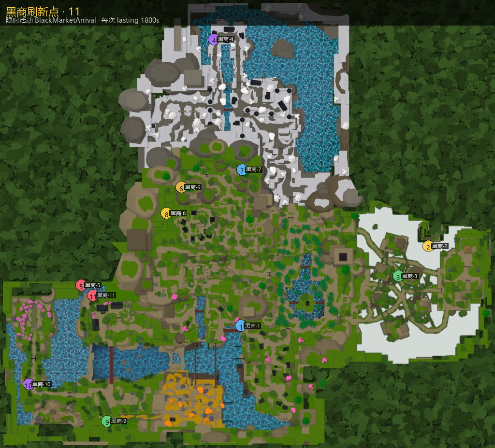

黑商 Black Marketer
限时活动 BlackMarketArrival：在场约 1800 秒；货架 4～6 格。必出冻结之心 / 精炼护符等，其余按稀有度权重抽 Stock。

主页 / 黑商
限时活动 BlackMarketArrival：在场约 1800 秒；货架 4～6 格。必出冻结之心 / 精炼护符等，其余按稀有度权重抽 Stock。

稀有度权重：Mythic 5 / Legendary 10 / Epic 20 / Rare 30 / Common 35。
| # | 坐标 |
|---|---|
| 1 | -132.68, 804.00, 101.24 |
| 2 | 2161.96, 823.46, -900.68 |
| 3 | 1795.51, 659.40, -523.10 |
| 4 | -464.86, 1356.97, -3497.76 |
| 5 | -2089.84, 62.24, -408.46 |
| 6 | -864.70, 1389.00, -1639.54 |
| 7 | -118.71, 1379.28, -1861.28 |
| 8 | -1045.37, 1282.00, -1312.49 |
| 9 | -1775.23, 141.75, 1297.08 |
| 10 | -2736.26, 143.75, 833.49 |
| 11 | -1946.01, 311.50, -282.89 |